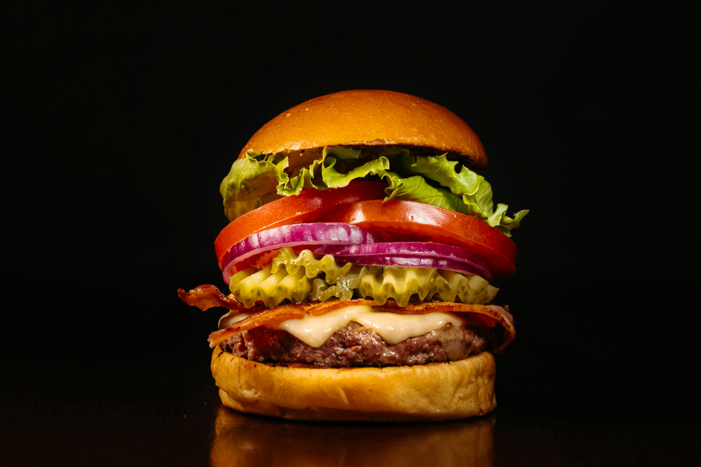
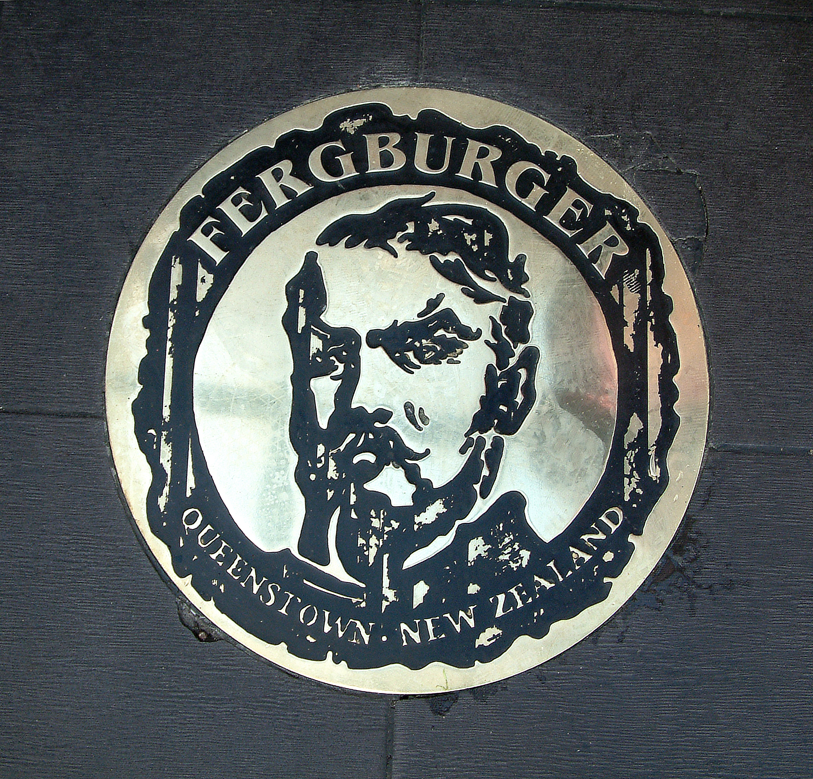
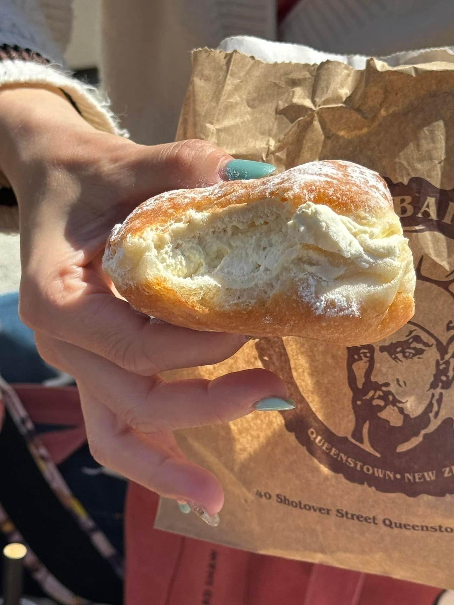
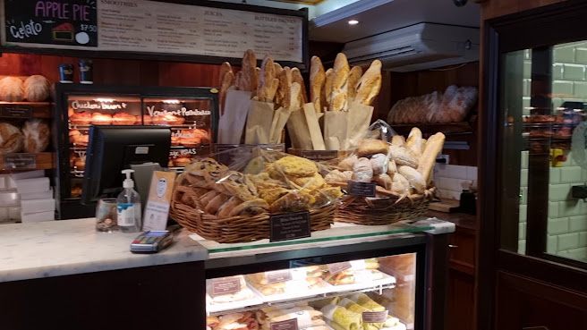
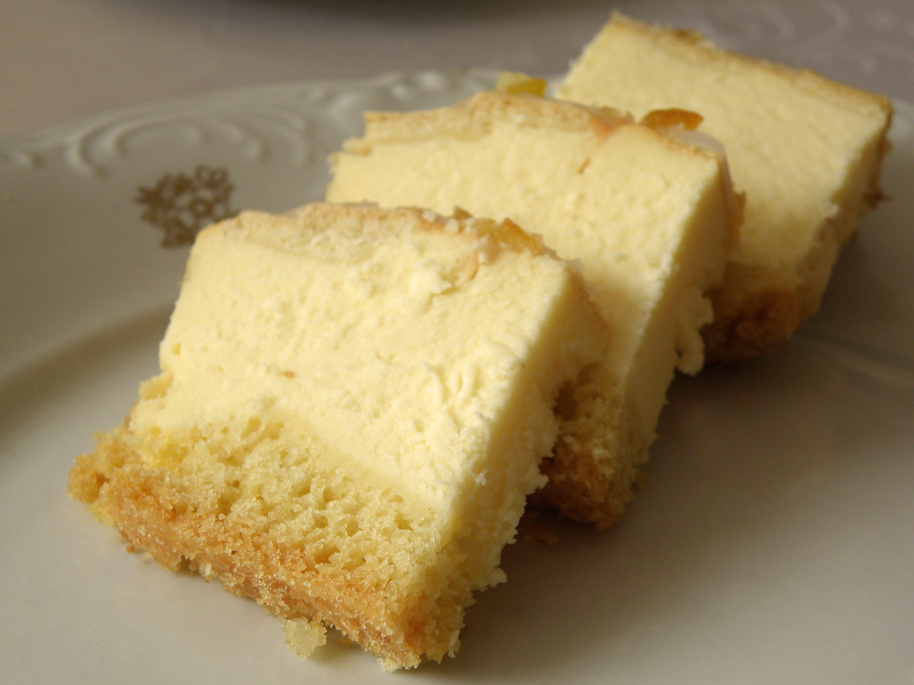
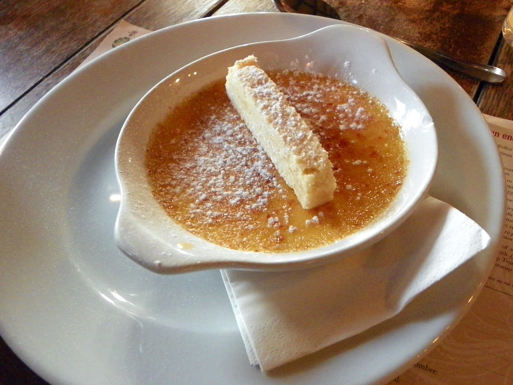

Savory Treasures



Fergburger
Sink your teeth into Queenstown's most legendary burger — stacked high, messy in the best way, and worth every minute of the queue. Open late and always buzzing, it's a rite of passage for anyone passing through.
View DetailsOtago Polytechnic Training Restaurant
Experience dining with a purpose at the Otago Polytechnic Training Restaurant, where emerging chefs and hospitality students craft innovative, restaurant-quality dishes under the guidance of industry professionals.
View DetailsStratosphere Resturant & Bar
Dine high above Queenstown with sweeping alpine views that stretch across Lake Wakatipu and beyond. A buffet-style experience where the scenery rivals the food, especially as the sun dips behind the mountains.
View DetailsSweet Delights
Cookie Time Bar
Step into a world of warm cookies, rich ice cream, and over-the-top desserts that feel as good as they look. Famous for its freshly baked treats and indulgent cookie sandwiches, it's a sweet stop in the heart of Queenstown that's impossible to walk past without giving in.
View Details


Fergbaker
Fergbaker is the cosy bakery, serving up freshly baked pies, sandwiches, pastries, and sweet treats all made daily. It's the perfect grab-and-go stop for something warm and satisfying, whether you're heading off on an adventure or wandering the town centre.
View Details


Stables Restaurant
Set within a beautifully restored historic building, Stables Restaurant offers a refined take on classic desserts, where rich flavours meet elegant presentation. From indulgent chocolate creations to seasonal fruit-based sweets, each dish is crafted to feel both comforting and elevated.
View DetailsPopular Wineries
Swipe through to view wineries
Ready for your Queenstown adventure?
Book a flight, and discover Accommodation options for your stay in Queenstown!